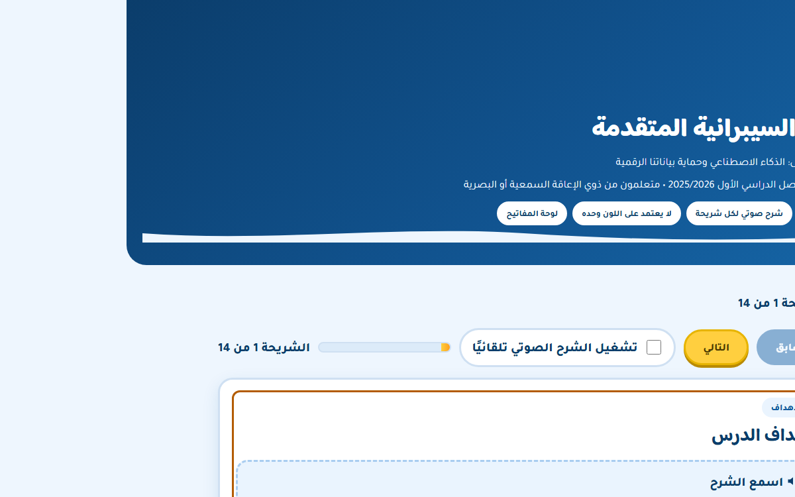
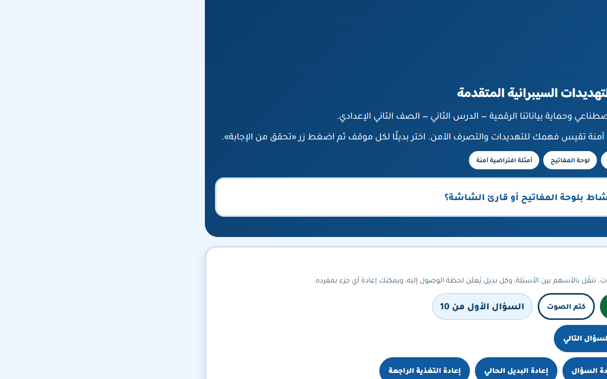

التهديدات السيبرانية المتقدمة
درس واحد في جزأين: تشرح الفكرة، ثم تختبر فهمك في مواقف من حياتك المدرسية. النص كامل والصوت مسجَّل، وكل شيء يعمل بلوحة المفاتيح.
الجولة الصوتية: شرح متسلسل من أوله لآخرهعشر خطوات، تنتقل وحدها، وتشرح الدرس ثم طريقة استخدام الموقع.
اضغط «ابدأ الجولة الصوتية» لتسمع الشرح كاملًا بالترتيب: فكرة الدرس، ثم أنواع التهديدات، ثم القسمين، ثم طريقة التنقل والتحكم بالصوت.
لم تبدأ الجولة بعد.
ابدأ من هنا بالترتيب
- ١. تعلّم المفاتيح أولًا خمس دقائق: تعرف المفاتيح، وتتدرب عليها بالصوت خطوة بخطوة.
- ٢. ابدأ الدرس أربع عشرة شريحة مسموعة، بترتيب من المفهوم إلى التطبيق.
- ٣. جرّب النشاط عشرة مواقف تفاعلية بنفس ترتيب الدرس.
آخر ما فتحته: الدرس التفاعلي
التحكم كله بحرف واحد
كل حاجة في الموقع ليها حرف واحد. اضغط الحرف لوحده، من غير Alt ومن غير Enter، والحروف شغالة من أول ما تفتح الموقع، وجوه الدرس والنشاط كمان. كل ضغطة بتظهر مكتوبة أسفل الشاشة، وبتتسمع لو التلاوة شغالة. اضغط على أي حرف تحت تسمع شرحه، وزرار الإعادة يسمعك كلهم تاني.
- Rعلّي الصوت
- Nوطّي الصوت
- Sأسرع
- Bأبطأ
- Gبدّل الصوت
- Tالتلاوة تشتغل أو تقف
- Eإعادة آخر حاجة
- Wوقّف الصوت
- Cاسمع الحروف تاني
- Kالتدريب اللحظي
- Dالدرس
- Aالنشاط
- Hالمساعدة
- Jالجولة الصوتية
- Escوقّف فورًا
تدريب على لوحة المفاتيح
قبل أن تبدأ، تدرب على المفاتيح التي ستستخدمها في الموقع. كل ضغطة تُقرأ لك بصوتها.
التدريب اللحظي على لوحة المفاتيح
هنا الموقع يسمع كل ضغطة على لوحة المفاتيح ويردّ عليها فورًا. سأطلب منك مفتاحًا واحدًا في كل مرة: إن ضغطته صحيحًا سمعت تصفيقًا، وإن ضغطت غيره سمعت صوت تنبيه وصححت لك المطلوب.
اضغط المفتاح المطلوب فقط. للخروج من التدريب في أي لحظة اضغط Escape.
أكملت التدريب. يمكنك الآن الانتقال إلى أي قسم من الشريط العلوي.
أجزاء الموقع
كل جزء يعمل منفردًا، ويمكنك الانتقال بينها من الشريط العلوي في أي وقت.

الدرس التفاعلي
من أهداف الدرس حتى «اختبر نفسك»: برامج الفدية، والهندسة الاجتماعية، والتصيد الموجّه، وانتحال الشخصية، والاستدراج، وهجمات الحرمان من الخدمة.
ابدأ الدرس
النشاط التفاعلي
مواقف من الحياة المدرسية تختار فيها التصرف الآمن، ثم تقرأ تفسير الإجابة، وتحصل على نتيجة نهائية مع إمكانية إعادة المحاولة.
ابدأ النشاطكيف تبدأ في خطوتين
الترتيب مقترح، وليس إلزاميًا.
- افتح الدرساقرأ أو استمع لكل شريحة، واستخدم زر «التالي» للانتقال.
- جرّب النشاطأجب عن المواقف العشرة، واقرأ التفسير بعد كل إجابة.
مصمَّم ليكون مسموعًا ومقروءًا بالكامل
لا يعتمد أي جزء من الموقع على اللون وحده، ولا يحتاج فأرة.
الدرس التفاعلي
14 شريحة تبدأ بأهداف الدرس وتنتهي باختبار قصير، مع شرح صوتي لكل شريحة.
التنقل داخل الدرس بزرَّي «التالي» و«السابق»، أو بالسهمين الأيمن والأيسر.
النشاط التفاعلي
ثلاث طرق للتدريب: محاكاة واقعية تسمع فيها الموقف ونتيجة تصرفك، وتحدي إشعارات بوقت مسموع، والأسئلة بالصيغة المعتادة. فيه لوحة تحكم صوتية كاملة.
اختر إحدى الطرق الثلاث أولًا. في المحاكاة والتحدي، الأسهم أعلى وأسفل للتنقل بين التصرفات، ويُعلَن كل تصرف عند الوصول إليه، ثم Enter أو مسافة للاختيار. في التحدي تجد أيضًا زر كم بقي من الوقت، والإيقاف المؤقت، وعشر ثوانٍ إضافية. Alt+7 يعيد شرح الطريقة، وAlt+8 يفتح تحدي الإشعارات، وEsc يوقف الصوت. والأسئلة المعتادة محفوظة أسفل الصفحة.